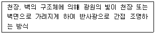
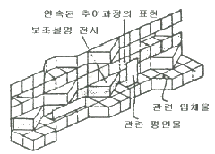
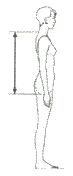
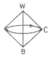
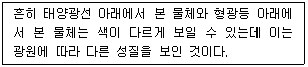
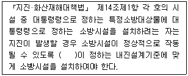

실내건축산업기사 (2019-08-04 기출문제)
1과목: 실내디자인론
1. 주거공간에 있어 욕실에 관한 설명으로 옳지 않은 것은?
- 조명은 방습형 조명기구를 사용하도록 한다.
- 방수·방오성이 큰 마감재를 사용하는 것이 기본이다.
- 변기 주위에는 냄새가 나므로 책, 화분 등을 놓지 않는다.
- 욕실의 크기는 욕조, 세면기, 변기를 한 공간에 둘 경우 일반적으로 4m2 정도가 적당하다.
(정답률: 83%)

2. 치수계획에 있어 적정치수를 설정하는 방법은 최소치 +α, 최대치 -α, 목표치 ±α 이다. 이때 α는 적정치수를 끌어내기 위한 어떤 치수인가?
- 표준치수
- 절대치수
- 여유치수
- 기본치수
(정답률: 74%)
3. 다음 중 황금분할의 비율로 가장 알맞은 것은?
- 1 : 1.314
- 1 : 1.414
- 1 : 1.618
- 1 : 1.732
(정답률: 90%)
4. 한국 전통 가구 중 수납계 가구에 속하지 않는 것은?
- 농
- 궤
- 소반
- 반닫이
(정답률: 83%)
5. 사무소의 로비에 설치하는 안내 데스크에 대한 설명으로 옳지 않은 것은?
- 로비에서 시각적으로 찾기 쉬운 곳에 배치한다.
- 회사의 이미지, 스타일을 시각적으로 적절히 표현하는 것이 좋다.
- 스툴 의자는 일반 의자에 비해 데스크 근무자의 피로도가 높다.
- 바닥의 레벨을 높여 데스크 근무자가 방문객 및 로비의 상황을 내려 볼 수 있도록 한다.
(정답률: 83%)
6. 건축계획 시 함께 계획하여 건축물과 일체화하여 설치되는 가구는?
- 유닛 가구
- 붙박이 가구
- 인체계 가구
- 시스템 가구
(정답률: 85%)
7. 디자인 요소 중 선에 관한 설명으로 옳지 않은 것은?
- 선은 면이 이동한 궤적이다.
- 선을 포개면 패턴을 얻을 수 있다.
- 많은 선을 나란히 놓으면 면을 느낀다.
- 선은 어떤 형상을 규정하거나 한정한다.
(정답률: 73%)
8. 다음 설명에 알맞은 건축화 조명방식은?

- 코브 조명
- 광창 조명
- 광천장 조명
- 밸런스 조명
(정답률: 67%)
9. 형태를 현실적 형태와 이념적 형태로 구분할 경우, 다음 중 이념적 형태에 관한 설명으로 옳은 것은?
- 주위에 실제 존재하는 모든 물상을 말한다.
- 인간의 지각으로는 직접 느낄 수 없는 형태이다.
- 자연계에 존재하는 모든 것으로부터 보이는 형태를 말한다.
- 기본적으로 모든 이념적 형태들은 휴먼 스케일과 일정한 관계를 갖는다.
(정답률: 71%)
10. 실내공간을 구성하는 주요 기본구성요소에 관한 설명으로 옳지 않은 것은?
- 벽은 공간을 에워싸는 수직적 요소로 수평방향을 차단하여 공간을 형성한다.
- 바닥은 신체와 직접 접촉하기에 촉각적으로 만족할 수 있는 조건을 요구한다.
- 천장은 외부로부터 추위와 습기를 차단하고 사람과 물건을 지지하여 생활장소를 지탱하게 해준다.
- 기둥은 선형의 수직요소로 크기, 형상을 가지고 있으며, 구조적 요소로 사용하거나 또는 강조적·상징적 요소로 사용된다.
(정답률: 79%)
11. 다음 중 부엌의 능률적인 작업순서에 따른 작업대의 배열순서로 알맞은 것은?
- 준비대 → 개수대 → 가열대 → 조리대 → 배선대
- 준비대 → 조리대 → 가열대 → 개수대 → 배선대
- 준비대 → 개수대 → 조리대 → 가열대 → 배선대
- 준비대 → 조리대 → 개수대 → 가열대 → 배선대
(정답률: 85%)
12. 상점의 상품 진열에 관한 설명으로 옳지 않은 것은?
- 운동기구 등 무게가 무거운 물품은 바닥에 가깝게 배치하는 것이 좋다.
- 상품의 진열범위 중 골든 스페이스(golden space)는 600~900mm 의 높이이다.
- 눈높이 1500mm을 기준으로 상향 10°에서 하향 20° 사이가 고객이 시선을 두기 가장 편한 범위이다.
- 사람의 시각적 특징에 따라 좌측에서 우측으로, 작은 상품에서 큰 상품으로 진열의 흐름도를 만드는 것이 효과적이다.
(정답률: 79%)
13. 소규모 주택에서 식당, 거실, 부엌을 하나의 공간에 배치한 형식은?
- 다이닝 키친
- 리빙 다이닝
- 다이닝 테라스
- 리빙 다이닝 키친
(정답률: 88%)
14. 실내디자인의 개념에 관한 설명으로 옳지 않은 것은?
- 형태와 기능의 통합작업이다.
- 목적물에 관한 이미지의 실체화이다.
- 어떤 사물에 대해 행해지는 스타일링(styling)의 총칭이다.
- 인간생활에 유용한 공간을 만들거나 환경을 조성하는 과정이다.
(정답률: 72%)
15. 가장 완전한 균형의 상태로 공간에 질서를 주기가 용이하며, 정적, 안정, 엄숙 등의 성격으로 규명할 수 있는 것은?
- 비정형 균형
- 대칭적 균형
- 비대칭 균형
- 능동의 균형
(정답률: 86%)
16. 사무소 건축에서 코어의 기능에 관한 설명으로 옳지 않은 것은?
- 내력적 구조체로서의 기능을 수행할 수 있다.
- 공용부분을 집약시켜 사무소의 유효면적이 증가된다.
- 엘리베이터, 파이프 샤프트, 덕트 등의 설비요소를 집약시킬 수 있다.
- 설비 및 교통 요소들이 존(zone)을 형성함으로서 업무공간의 융통성이 감소된다.
(정답률: 77%)
17. 투시성이 있는 얇은 커튼의 총칭으로 창문의 유리면 바로 앞에 얇은 직물로 설치하기 때문에 실내에 유입되는 빛을 부드럽게 하는 것은?
- 새시 커튼
- 드로우 커튼
- 글라스 커튼
- 드레이퍼리 커튼
(정답률: 71%)
18. 조명의 연출기법 중 강조하고자 하는 물체에 의도적인 광선을 조사시킴으로써 광선 자체가 시각적인 특성을 갖도록 하는 기법은?
- 실루엣 기법
- 월 워싱 기법
- 빔 플레이 기법
- 그림자 연출기법
(정답률: 86%)
19. 상점의 숍 프런트(shop front) 구성 형식 중 출입구 이외에는 벽 등으로 외부와의 경계를 차단한 형식은?
- 개방형
- 폐쇄형
- 돌출형
- 만입형
(정답률: 84%)
20. 다음 그림이 나타내는 특수전시기법은?

- 디오라마 전시
- 아일랜드 전시
- 파노라마 전시
- 하모니카 전시
(정답률: 76%)
2과목: 색채 및 인간공학
21. 작업장에서의 조명에 의한 그림자와 눈부심(Glare)을 감소시키고, 균일한 조도를 얻을 수 있는 조명방법으로 적합한 것은?
- 자연광
- 직접조명
- 간접조명
- 국소조명
(정답률: 70%)
22. 음의 높고 낮음과 관련이 있는 음의 특성으로 옳은 것은?
- 진폭
- 리듬
- 파형
- 진동수
(정답률: 56%)
23. 다음의 짐 운반방법 중 상대적에너지 소비량이 가장 큰 운반방법에 해당하는 것은?
- 배낭메기
- 머리에 올리기
- 쌀자루메기
- 양손으로 들기
(정답률: 77%)
24. 다음 중 한국인 인체치수조사 사업의 표준인체측정항목 중 등길이로 옳은 것은?

(정답률: 69%)
25. 경계 및 경보 신호를 설계할 때의 지침으로 옳지 않은 것은?
- 배경 소음의 진동수와 다른 신호를 사용한다.
- 장거리(300m 이상)용으로는 1000 Hz 이상의 진동수를 사용한다.
- 귀는 중음역에 가장 민감하므로 500 ~ 3000 Hz의 진동수를 사용한다.
- 신호가 장애물을 돌아가거나 칸막이를 사용할 때에는 500 Hz 이하의 진동수를 사용한다.
(정답률: 48%)
26. 산업안전보건법령상 영상표시단말기(VDT) 취급근로자의 작업자세에 관한 설명으로 옳지 않은 것은?
- 작업자의 손목을 지지해 줄 수 있도록 작업대 끝면과 키보드의 사이는 15cm 이상을 확보한다.
- 작업자의 시선은 수평선상으로부터 아래로 10 ~ 15° 이내로 한다.
- 눈으로부터 화면까지의 시거리는 40cm 이상을 유지한다.
- 무릎의 내각(knee angle)은 120° 이상이 되도록 한다.
(정답률: 62%)
27. 눈과 카메라의 구조 상 동일한 기능을 수행하는 기관을 연결한 것으로 적합하지 않은 것은?
- 망막 - 필름
- 동공 - 조리개
- 수정체 - 렌즈
- 시신경 – 셔터
(정답률: 64%)
28. 최적의 조건에서 시각적 암호의 식별 가능 수준주가 가장 큰 것은?
- 숫자
- 면색(面色)
- 영문자
- 색광(色光)
(정답률: 56%)
29. 인간-기계 시스템의 평가척도 중 인간기준이 아닌 것은?
- 성능척도
- 객관적 응답
- 생리적 지표
- 주관적 반응
(정답률: 48%)
30. 시각적 표시장치에 있어서 지침의 설계요령으로 옳은 것은?
- 지침의 끝은 둥글게 하는 것이 좋다.
- 지침의 끝은 작은 눈금부분과 겹치게 한다.
- 지침은 시차를 없애기 위하여 눈금면과 밀착시킨다.
- 원형 눈금의 경우 지침의 색은 눈금면의 색과 동일하게 한다.
(정답률: 59%)
31. 색의 3속성에 대한 설명으로 가장 관계가 적은 것은?
- 색의 3속성이란 색자극 요소에 의해 일어나는 세 가지 지각성질을 말한다.
- 색의 3속성은 색상, 명도, 채도이다.
- 색의 밝기에 대한 정도를 느끼는 것을 명도라 부른다.
- 색의 3속성 중 채도만 있는 것을 유채색이라 한다.
(정답률: 68%)
32. 옷감을 고를 때 작은 견본을 보고 고른 후 옷이 완성된 후에는 예상과 달리 색상이 뚜렷한 경우가 있다. 이것은 다음 중 어느 것과 관련이 있는가?
- 보색대비
- 연변대비
- 색상대비
- 면적대비
(정답률: 76%)
33. 24비트 컬러 중에서 정해진 256 컬러표를 사용하는 단일 채널 이미지는?
- 256 vector colors
- grayscale
- bitmap color
- indexed color
(정답률: 49%)
34. 다음 그림과 같은 색입체는?

- 오스트발트
- 먼셀
- L*a*b*
- 괴테
(정답률: 63%)
35. 빨간 사과를 태양광선 아래에서 보았을 때와 백열등 아래에서 보았을 때 빨간색이 동일하게 지각되는데 이 현상을 무엇이라고 하는가?
- 명순응
- 대비현상
- 항상성
- 연색성
(정답률: 65%)
36. 문·스펜서의 조화론에서 색의 중심이 되는 순응점은?
- N5
- N7
- N9
- N10
(정답률: 73%)
37. 다음 중 뚱뚱한 체격의 사람이 피해야 할 의복의 색은 무엇인가?
- 청색
- 초록색
- 노란색
- 바다색
(정답률: 82%)
38. 다음의 색의 어떤 성질에 대한 설명인가?

- 조건등색
- 색각이상
- 베졸드효과
- 연색성
(정답률: 60%)
39. 먼셀의 20색상환에서 보색대비의 연결은?
- 노랑 - 남색
- 파랑 - 초록
- 보라 - 노랑
- 빨강 – 초록
(정답률: 61%)
40. 색의 조화에 관한 설명 중 옳은 것은?
- 색채의 조화, 부조화는 주관적인 것이기 때문에 인간 공통의 어떠한 법칙을 찾아내는 것은 불가능하다.
- 일반적으로 조화는 질서 있는 배색에서 생긴다.
- 문·스펜서 조화론은 오스트발트 표색계를 사용한 것이다.
- 오스트발트 조화론은 먼셀 표색계를 사용한 것이다.
(정답률: 48%)
3과목: 건축재료
41. 표준형 점토벽돌의 치수로 옳은 것은?
- 210 × 90 × 57 mm
- 210 × 110 × 60 mm
- 190 × 100 × 60 mm
- 190 × 90 × 57 mm
(정답률: 77%)
42. 콘크리트용 골재의 품질조건으로 옳지 않은 것은?
- 유해량의 먼지, 유기불순물 등을 포함하지 않은 것
- 표면이 매끈한 것
- 구형에 가까운 것
- 청정한 것
(정답률: 60%)
43. 시멘트에 관한 설명으로 옳지 않은 것은?
- 시멘트의 밀도는 3.15 g/cm3 정도이다.
- 시멘트의 분말도는 비표면적으로 표시한다.
- 강열감량은 시멘트의 소성반응의 완전여부를 알아내는 척도가 된다.
- 시멘트의 수화열은 균열발생의 원인이 된다.
(정답률: 47%)
44. 유리의 일반적인 성질에 관한 설명으로 옳지 않은 것은?
- 철분이 많을수록 자외선 투과율이 높아진다.
- 깨끗한 창유리의 흡수율은 2~6% 정도이다.
- 투과율은 유리의 맑은 정도, 착색, 표면상태에 따라 달라진다.
- 열전도율은 대리석, 타일보다 작은편이다.
(정답률: 56%)
45. 목재의 흠의 종류 중 가지가 줄기의 조직에 말려 들어가 나이테가 밀집되고 수지가 많아 단단하게 된 것은?
- 옹이
- 지선
- 할렬
- 잔적
(정답률: 78%)
46. 용융하기 쉽고, 산에는 강하나 알칼리에 약하며 창유리, 유리블록 등에 사용하는 유리는?
- 물유리
- 유리섬유
- 소다석회유리
- 칼륨납유리
(정답률: 72%)
47. 차음재료의 요구성능에 관한 설명으로 옳은 것은?
- 비중이 작을 것
- 음의 투과손실이 클 것
- 밀도가 작을 것
- 다공질 또는 섬유질이어야 할 것
(정답률: 45%)
48. 금속의 부식방지를 위한 관리대책으로 옳지 않은 것은?
- 가능한 한 이종금속을 인접 또는 접촉시켜 사용할 것
- 큰 변형을 준 것은 가능한 한 풀림하여 사용할 것
- 표면을 평활하고 깨끗이 하며, 가능한 한 건조상태를 유지할 것
- 부분적으로 녹이 발생하면 즉시 제거할 것
(정답률: 69%)
49. 도장재료에 관한 설명으로 옳지 않은 것은?
- 바나시는 천연수지, 합성수지 또는 역청질 등을 건성유와 같이 가열·융합시켜 건조제를 넣고 용제로 녹인 것을 말한다.
- 유성조합페인트는 붓바름작업성 및 내후성이 뛰어나다.
- 유성페인트는 보일유와 안료를 혼합한 것을 말한다.
- 수성페인트는 광택이 매우 뛰어나고, 마감면의 마모가 거의 없다.
(정답률: 70%)
50. 다음 중 유기재료에 속하는 것은?
- 목재
- 알루미늄
- 석재
- 콘크리트
(정답률: 62%)
51. 다음 접착제 중 고무상의 고분자물질로서 내유성 및 내약품성이 우수하며 줄눈재, 구멍메움재로 사용되는 것은?
- 천연고무
- 치오콜
- 네이프랜
- 아교
(정답률: 58%)
52. 목재의 강도에 관한 설명으로 옳지 않은 것은?
- 심재의 강도가 변재보다 크다.
- 함수율이 높을수록 강도가 크다.
- 추재의 강도가 춘재보다 크다.
- 절건비중이 클수록 강도가 크다.
(정답률: 70%)
53. 콘크리트 1m3를 제작하는데 소요되는 각 재료의 양을 질량(kg)으로 표시한 배합은?
- 질량배합
- 용적배합
- 현장배합
- 계획배합
(정답률: 72%)
54. 도장재료인 안료에 관한 설명으로 옳지 않은 것은?
- 안료는 유색의 불투명한 도막을 만듦과 동시에 도막의 기계적 성질을 보완한다.
- 무기안료는 내광성·내열성이 크다.
- 유기안료는 레이크(lake)라고도 한다.
- 무기안료는 유기용제에 잘 녹고 색의 선명도에서 유기안료보다 양호하다.
(정답률: 57%)
55. 아스팔트와 피치(pitch)에 관한 설명으로 옳지 않은 것은?
- 아스팔트와 피치의 단면은 광택이 있고 흑색이다.
- 피치는 아스팔트보다 냄새가 강하다.
- 아스팔트는 피치보다 내구성이 있다.
- 아스팔트는 상온에서 유동성이 없지만 가열하면 피치보다 빨리 부드러워진다.
(정답률: 53%)
56. 열가소성 수지에 관한 설명으로 옳지 않은 것은?
- 축합반응으로부터 얻어진다.
- 유기용제로 녹일 수 있다.
- 1차원적인 선상구조를 갖는다.
- 가열하면 분자결합이 감소하며 부드러워지고 냉각하면 단단해진다.
(정답률: 32%)
57. 강재의 탄소량과 강도와의 관계에서 강재의 인장강도 및 경도가 최대에 도달하게 되는 강의 탄소함유량은 약 얼마인가?
- 0.15%
- 0.35%
- 0.55%
- 0.85%
(정답률: 47%)
58. 석재의 특징에 관한 설명으로 옳지 않은 것은?
- 압축강도가 큰 편이다.
- 불연성이다.
- 비중이 작은 편이다.
- 가공성이 불량하다.
(정답률: 72%)
59. 클링커타일(Clinker tile)이 주로 사용되는 장소에 해당하는 곳은?
- 침실의 내벽
- 화장실의 내벽
- 테라스의 바닥
- 화학실험실의 바닥
(정답률: 58%)
60. 도장공사 시 작업성을 개선하기 위한 보조첨가제(도막형성 부요소)로 볼 수 없는 것은?
- 산화촉진제
- 침전방지제
- 전색제
- 가소제
(정답률: 47%)
4과목: 건축일반
61. 소방특별조사를 실시하는 경우에 해당되지 않는 것은?
- 관계인이 소방시설법 또는 다른 법령에 따라 실시하는 소방시설등, 방화시설, 피난시설 등에 대한 자체점검 등이 불성실하거나 불완전하다고 인정되는 경우
- 국가적 행사 등 주요 행사가 개최되는 장소 및 그 주변의 관계 지역에 대하여 소방안전 관리 실태를 점검할 필요가 있는 경우
- 화재가 발생되지 않아 일상적인 점검을 요하는 경우
- 재난예측정보, 기상예보 등을 분석한 결과 소방대상물에 화재, 재난·재해의 발생 위험이 높다고 판단되는 경우
(정답률: 76%)
62. 건축물에 설치하는 특별피난계단의 구조에 관한 기준으로 옳지 않은 것은?
- 계단실에는 노대 또는 부속실에 접하는 부분외에는 건축물의 내부와 접하는 창문등을 설치하지 아니할 것
- 건축물의 내부에서 노대 또는 부속실로 통하는 출입구에는 을종방화문을 설치할 것
- 계단은 내화구조로 하되, 피난층 또는 지상까지 직접 연결되도록 할 것
- 출입구의 유효너비는 0.9m 이상으로 하고 피난의 방향으로 열 수 있을 것
(정답률: 60%)
63. 다음 ( ) 안에 적합한 것은?

- 국토교통부장관
- 소방서장
- 소방청장
- 행정안전부장관
(정답률: 60%)
64. 건축물에 설치하는 급수·배수 등의 용도로 쓰는 배관설비의 설치 및 구조에 관한 기준으로 옳지 않은 것은?
- 배관설비를 콘크리트에 묻는 경우 부식의 우려가 있는 재료는 부식방지조치를 할 것
- 건축물의 주요부분을 관통하여 배관하는 경우에는 건축물의 구조내력에 지장이 없도록 할 것
- 승강기의 승강로안에는 승강기의 운행에 필요한 배관설비외에도 건축물 유지에 필요한 배관설비를 모두 집약하여 설치하도록 할 것
- 압력탱크 및 급탕설비에는 폭발등의 위험을 막을 수 있는 시설을 설치할 것
(정답률: 73%)
65. 목재의 이음에 사용되는 듀벨(Dubel)이 저항하는 힘의 종류는?
- 인장력
- 전단력
- 압축력
- 수평력
(정답률: 53%)
66. 단독경보형감지기를 설치하여야 하는 특정소방대상물에 해당되지 않는 것은?
- 연면적 800m2인 아파트
- 연면적 600m2 인 유치원
- 수련시설 내에 있는 합숙소로서 연면적이 1500m2 인 것
- 연면적 500m2 인 숙박시설
(정답률: 34%)
67. 건축관계법규에서 규정하는 방화구조가 되기 위한 철망 모르타르의 최소 바름두께는?
- 1.0 cm
- 2.0 cm
- 2.7 cm
- 3.0 cm
(정답률: 65%)
68. 다음 소방시설 중 소화설비가 아닌 것은?
- 누전경보기
- 옥내소화전설비
- 간이스프링클러설비
- 옥외소화전설비
(정답률: 75%)
69. 건축물의 출입구에 설치하는 회전문은 계단이나 에스컬레이터로부터 최소 얼마 이상의 거리를 두어야 하는가?
- 2m 이상
- 3m 이상
- 4m 이상
- 5m 이상
(정답률: 49%)
70. 건축물의 피난·방화구조 등의 기준에 관한 규칙에서 정의하고 있는 재료에 해당되지 않는 것은?
- 난연재료
- 불연재료
- 준불연재료
- 내화재료
(정답률: 42%)
71. 방염대상물품의 방염성능기준으로 옳지 않은 것은?
- 버너의 불꽃을 제거한 때부터 불꽃을 올리며 연소하는 상태가 그칠 때까지 시간은 20초 이내일 것
- 버너의 불꽃을 제거한 때부터 불꽃을 올리지 아니하고 연소하는 상태가 그칠 때까지 시간은 20초 이내일 것
- 탄화한 면적은 50cm2 이내, 탄화한 길이는 20cm 이내일 것
- 불꽃에 의하여 완전히 녹을 때까지 불꽃의 접촉횟수는 3회 이상일 것
(정답률: 60%)
72. 방염성능기준 이상의 실내장식물 등을 설치하여야 하는 특정소방대상물에 해당되지 않는 것은?
- 건축물의 옥내이 있는 운동시설 중 수영장
- 근린생활시설 중 체력단련장
- 방송통신시설 중 방송국
- 교육연구시설 중 합숙소
(정답률: 74%)
73. 바닥면적이 100m2 인 의료시설의 병실에서 채광을 위하여 설치하여야 하는 창문등의 최소면적은?
- 5 m2
- 10 m2
- 20 m2
- 30 m2
(정답률: 69%)
74. 바우하우스에 관한 설명으로 옳지 않은 것은?
- 과거양식에 집착하고 이를 바탕으로 연구하였다.
- 윌터 그로피우스에 의해 설립되었다.
- 예술과 공업생산을 결합하여 모든 예술의 통합화를 추구하였다.
- 이론과 실기교육을 병행하였다.
(정답률: 63%)
75. 목구조에서 각 부재의 접합부 및 벽체를 튼튼하게 하기 위하여 사용되는 부재와 관련 없는 것은?
- 귀잡이
- 버팀대
- 가새
- 장선
(정답률: 53%)
76. 물 0.5kg을 15℃에서 70℃로 가열하는데 필요한 열량은 얼마인가? (단, 물의 비열은 4.2 kJ/kg℃ 이다.)
- 27.5 kJ
- 57.75 kJ
- 115.5 kJ
- 231.5 kJ
(정답률: 48%)
77. 차음성이 높은 재료의 특징으로 볼 수 없는 것은?
- 재질이 단단한 것
- 재질이 무거운 것
- 재질이 치밀한 것
- 재질이 다공질한 것
(정답률: 49%)
78. 건축물과 건축시대의 연결이 옳지 않은 것은?
- 봉정사 극락전 - 고려시대
- 부석사 무량수전 - 고려시대
- 수덕사 대웅전 – 조선 초기
- 불국사 극락전 – 조선 후기
(정답률: 45%)
79. 왕대공 지붕틀을 구성하는 부재가 아닌 것은?
- 평보
- ㅅ자보
- 빗대공
- 반자틀
(정답률: 51%)
80. 문화 및 집회시설, 운동시설, 관광휴게시설로서 자동화재탐지설비를 설치하여야 할 특정소방대상물의 연면적 기준은?
- 1000 m2 이상
- 1500 m2 이상
- 2000 m2 이상
- 2300 m2 이상
(정답률: 51%)